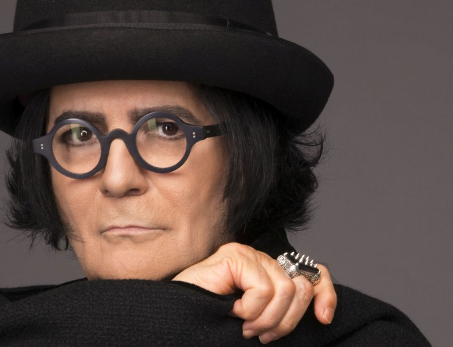
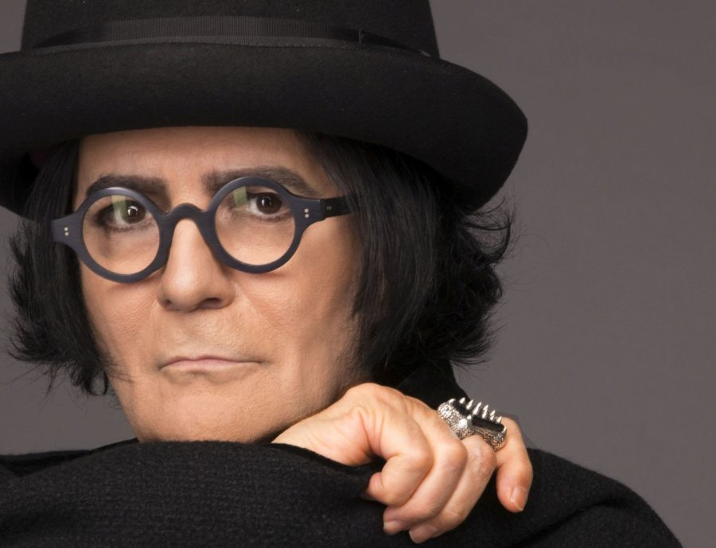
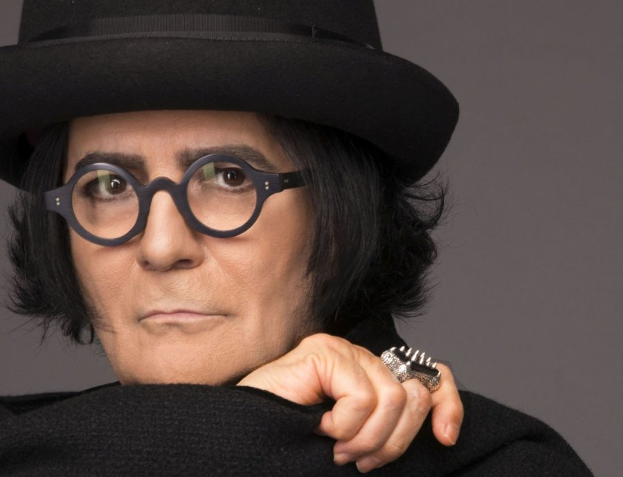

| CITTÀ | DATA | POSTO |
| ROMA | 10/06/2023 | PALAZZO DELLO SPORT |
| FIRENZE | 17/06/2023 | MANDELA FORUM |
| CONEGLIANO | 24/06/2023 | ZOPPAS ARENA |
| TORINO | 01/07/2023 | PALA ALPITOUR |
| MANTOVA | 08/07/2023 | GRANA PADANO ARENA |
| BOLOGNA | 15/07/2023 | UNIPOL ARENA |
Sei pronto per il concerto? consultare la sua discografia
Renato Zero è il nome d’arte di Renato Fiacchini nato a Roma il 30 settembre 1950 dall’unione tra il poliziotto Domenico Fiacchini e l’infermiera Ada Pica. Trascorrerà la sua infanzia in via Ripetta,
54 a due passi da piazza del Popolo, mentre vivrà la sua
adolescenza in via Fonte Buono, zona Montagnola.
A quattordici anni ottiene il suo primo contratto per 500 lire al giorno al Ciak di Roma,
ma l’ingresso ufficiale di Renato nel mondo della musica è datato 1967 con il 45 giri
“Non basta sai /In mezzo ai guai”. Comincerà a frequentare il noto locale romano Piper,
che segnerà un’epoca divenendo un punto di riferimento per chiunque volesse entrare a
far parte del mondo dello spettacolo.
Il 1976 è un anno decisivo per Zero che deve dimostrare la sua maturità di artista e
raggiungere finalmente un pubblico più vasto. Prepara quindi un nuovo album e il suo primo tour legati
L’anno della consacrazione definitiva sarà il 1977, quando Zero pubblica il 45 giri Mi vendo/Morire
qui con il quale entra in hit parade rimanendoci per cinquantasette settimane.
Zero nel 2003 pubblica Cattura, un lavoro che trabocca arte sin dalla copertina
(un’elaborazione grafica di Luciano Tallarini), innovativo, comunicativo e autocitazionista,
dalle sonorità internazionali (come in Voyeur la produzione è affidata a Geoff Wesley)
con molti pezzi destinati a rimanere fra i migliori della produzione zeriana (Magari,
Come mi vorresti, Figlio, I miei miti).
Il 20 marzo 2017, Renato Zero annuncia quello che sarà il suo progetto più ambizioso
di tutta la carriera: “Zerovskij Solo per Amore”, un doppio album ed un live senza precedenti.
Nel mese di maggio di 2019, il singolo “Mai più da soli”, anticipa l’uscita del nuovo album di inediti
intitolato “Zero il Folle” prevista per il 4 ottobre. Il brano, così come il resto dell’album,
registrato a Londra, vede la produzione e gli arrangiamenti di Trevor Horn (produttore di Paul
McCartney, Rod Stewart,Robbie Williams), con cui Renato Zero torna a collaborare dopo l’album “Amo” del 2013.

Condivido una delle canzoni che mi piacciono di più
En uno de sus conciertos